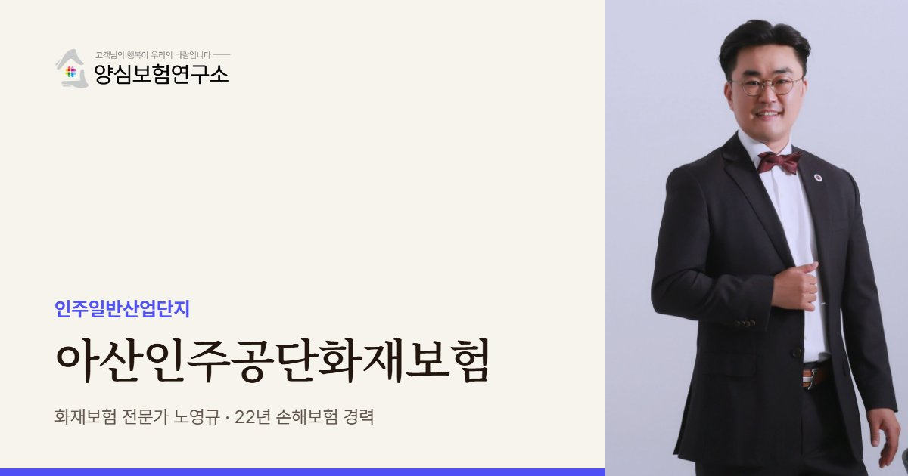

인주공단의 공장은 대부분 큰 완성차·부품 공급망의 한 고리입니다. 노영규 대표가 우리 공장이 멈췄을 때 납품처에 생기는 영향까지 함께 따져 보장을 설계합니다.
아산인주공단 안내
아산인주공단, 왜 공장화재보험이 중요할까요?
아산인주공단화재보험은 충남 아산시 인주면의 인주일반산업단지에 입주한 공장이 화재로 입는 재산 손해와 휴업 손실, 이웃에 대한 배상책임을 대비하는 공장 보험입니다. 인주공단은 1993년 지방공업단지로 지정돼 2011년 1단지를 준공했고, 2단지는 완성차 기업이 시행해 2017년까지 조성됐습니다.
2012년 가동 업체 기준으로 기계 20개, 철강 6개, 운송장비 6개사가 자리 잡았고, 최근 아산시 자료로는 45개사가 입주해 있습니다. 업체 수가 많지 않은 대신 한 공장의 규모가 크고, 대부분 자동차 부품 공급망에 묶여 있다는 점이 수도권 산단과 다릅니다. 한 공장이 멈추면 납품받는 완성차 라인까지 영향이 이어질 수 있습니다.
위치도 특징입니다. 아산항과 6km 거리이고 서해안고속도로 송악IC, 경부고속도로 천안IC와 이어집니다. 물류가 좋은 대신 원자재와 완제품이 수시로 드나들어, 출하를 기다리는 재고가 공장 마당과 창고에 쌓이는 시기가 있습니다. 재고 가입금액은 이 시기를 기준으로 잡는 것이 안전합니다.
2026년 4월에는 인주산단 안 화학업체 주차장에서 과산화수소를 실은 탱크로리가 폭발해 두 명이 다쳤습니다. 공장 자체의 공정뿐 아니라 단지를 드나드는 위험물 운송 차량도 사고 원인이 될 수 있다는 뜻입니다. 인주 3공구(아산하이테크밸리)는 2026년까지 조성 중이라 공사 현장과 가동 공장이 가까이 있는 점도 챙겨야 합니다.
인주공단처럼 대형 공장이 중심인 산단에서는 공장 한 곳의 가입금액이 커서 여러 보험사가 나눠 인수하는 경우도 있습니다. 증권이 여러 장이라면 목적물과 한도가 서로 겹치거나 비는 곳이 없는지 한 장의 표로 정리해 두는 것이 좋습니다.
2026.04 인주산단 화학업체 외부 주차장에서 과산화수소 탱크로리가 폭발해 작업자 2명이 다쳤습니다. (대전일보)
주요 위험
아산인주공단화재보험에서 먼저 볼 위험
자동차 부품 공급망
우리 공장이 멈추면 납품처 라인까지 멈출 수 있어 휴업손해와 납기 위험을 함께 봅니다.
철강·금속 공정
열처리와 용접 공정은 고온 설비와 불티 관리가 핵심입니다.
위험물 운송 차량
단지를 드나드는 탱크로리 사고가 인접 공장 피해로 번질 수 있습니다.
출하 대기 재고
항만과 가까워 출하를 기다리는 재고가 쌓이는 시기를 기준으로 가입금액을 잡습니다.
3공구 조성 공사
인접 공사 현장의 화기 작업과 임시 전기 설비를 주의합니다.
대형 설비
프레스와 가공 설비는 가격이 크고 대체 조달이 오래 걸려 설비·기계보험을 함께 검토합니다.
※ 실제 보장 여부와 한도, 면책 사항은 가입하는 상품의 약관과 공장 현황에 따라 달라집니다.
방문 상담
아산인주공단 직접 방문 상담
인주공단 공장은 규모가 커서 현장을 직접 봐야 설비와 재고 흐름이 보입니다. 공장을 찾아가 라인 구성과 출하 동선, 인접 공장과의 거리를 함께 확인합니다.
꼭 확인할 점검 항목
아산인주공단화재보험 점검 리스트
- 주요 납품처우리 공장이 멈추면 영향받는 거래처와 대체 공급 가능성을 정리합니다.
- 설비 조달 기간핵심 설비를 다시 들이는 데 걸리는 기간을 확인합니다.
- 출하 재고 흐름재고가 가장 많이 쌓이는 시기를 파악합니다.
- 위험물 반출입우리 공장과 이웃의 위험물 운송·보관 현황을 확인합니다.
- 인접 공사 현장3공구 공사 일정과 화기 작업 여부를 파악합니다.
고객 후기
실제 계약고객 만족 사례


※ 실제 계약고객과 나눈 카카오톡 상담과 후기 일부이며, 개인정보는 가렸습니다.
지역 상담 Q&A
아산인주공단화재보험 Q&A
인주공단 자동차 부품 공장은 무엇을 먼저 대비해야 하나요?
휴업 손실입니다. 공급망에 묶인 공장은 멈춘 기간의 이익 손실과 고정비가 크고, 납품처의 요구 조건도 있어 휴업손해 보상 기간을 설비 조달 기간에 맞춰 잡는 것이 우선입니다.
이웃 공장의 위험물 사고로 피해를 보면 어떻게 되나요?
우리 공장 화재보험으로 먼저 손해를 보상받고, 보험사가 원인 제공자에게 구상하는 방식이 일반적입니다. 폭발 사고가 보상 대상에 포함되는지 약관을 함께 확인해야 합니다.
프레스 같은 대형 설비가 고장 나면 화재보험으로 되나요?
기계 내부 고장은 보통 기계보험의 영역입니다. 대형 설비 비중이 큰 공장은 화재보험과 기계보험을 함께 검토하는 것이 좋습니다.
인주공단 공장이 원청 요구로 보험 증명서를 내야 한다면요?
원청이 요구하는 담보 종류, 한도, 피보험자 추가 여부를 계약서에서 먼저 확인한 뒤 그 조건에 맞춰 증권을 준비합니다. 조건을 맞추지 못하면 납품 계약에 문제가 생길 수 있습니다.